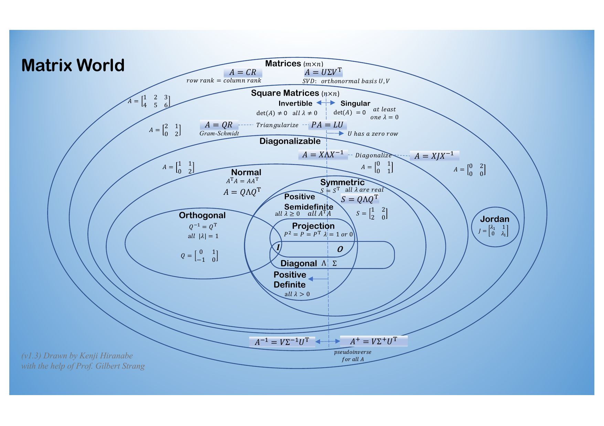

Resources
A small collection of visualizations, notes, and other materials I have found valuable in teaching and research. These are not my own work unless stated otherwise — full credit is given to the original creators alongside each entry.

Matrix World: The Picture of All Matrices
Created by Kenji Hiranabe, with Prof. Gilbert Strang (MIT) · v1.3 · released CC0 (public domain)
A single diagram nesting every major class of matrix — diagonal, symmetric, orthogonal, positive (semi)definite, projection, normal, Jordan, invertible/singular — inside one another, alongside the matrix factorizations (CR, LU, QR, eigendecomposition, SVD, pseudoinverse) that relate them. Part of Kenji Hiranabe's The Art of Linear Algebra project, developed in close collaboration with Prof. Gilbert Strang and based on his book Linear Algebra for Everyone.
Page generated September 24th 2026 10:19AM (Time Zone: IST), by jemdoc+MathJax.